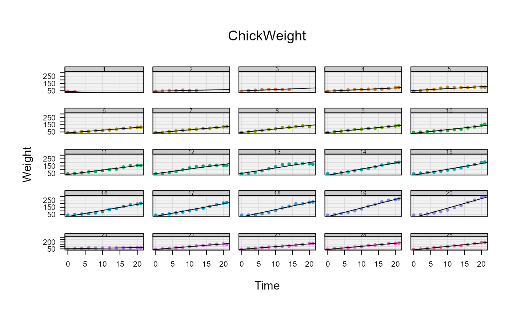

Draws a lattice-like matrix of panels in base graphics with identical plot region sizes, panel strips, axes on the outer panels only and a user-supplied panel function for the content. Panel gaps are defined in margin lines and remain exact, independent of device size and strip height, as the strip space is reserved separately in the layout.
Arguments
- samples
a list of samples, each a list (or data.frame) with components
xandy.- dim
integer vector of length 2, the number of rows and columns of the panel matrix,
c(nrow, ncol).- panelFun
the panel function, called per panel as
panelFun(x, y, col, pch, ...)with a fully set up coordinate system.- cols
the colors for the panels, recycled to the number of samples. Default is
hcl.colors(n, "Dark 3").- stripLabels
the labels for the panel strips. Default is the sequence along
samples.- main
the main title, placed in the outer margin.
- xlab, ylab
the axis labels, placed in the outer margins.
- xlim, ylim
the common axis limits for all panels. Default is the range over all samples.
- mar
the margins around the whole panel matrix in lines,
c(bottom, left, top, right). The bottom and left margins hold the axis annotation of the outer panels.- oma
the outer margins in lines, holding
xlab,ylabandmain.- horiz
the horizontal gap between adjacent columns in margin lines.
- vert
the vertical gap between adjacent rows in margin lines. Default is
horiz, yielding physically equal gaps.- strip
controls the panel strips, evaluated by bedrock::callIf:
TRUE(default) draws strips with default settings,FALSE/NULL/NAsuppresses them (no space is reserved), a named list is passed as arguments totitleRect, e.g.list(bg = "steelblue", col = "white", line = 1.5). Thelabelargument is set per panel fromstripLabelsand cannot be overridden.- bg
the background color of the plot regions.
- grid
controls the grid lines, evaluated by bedrock::callIf:
TRUE(default) draws grid lines at the positions ofaxTickswith default settings (col = "grey85", lwd = 0.8),FALSE/NULL/NAsuppresses them, a named list is passed as arguments toabline, e.g.list(col = "white", lty = "dotted"). The default positionsvandhcan be overridden, e.g.list(v = seq(0, 20, 5)).- cex
the character expansion used inside the panels (axis annotation, strip labels, panel content) and as unit for the panel margin lines. Default is 0.66, matching R's own reduction in multi-figure layouts. Set deterministically after each
plot.new(), see Details.- pch
the plotting character, passed to
panelFun.- ...
the dots are passed to
panelFun.
Value
Invisibly returns a list with the realized geometry:
horiz, vert, strip_line (reserved strip height
in lines) and the common plot region size plot_width_in,
plot_height_in in inches.
Details
The available device area inside the outer margins is partitioned with
layout such that all plot regions have exactly the same
size in inches. The horizontal gap between two adjacent columns is
horiz margin lines, the vertical gap between two adjacent rows is
vert lines. Since margin lines have the same physical size in
both directions, horiz == vert yields visually equal gaps.
The strip is drawn with titleRect above each panel. Its
height (line argument of titleRect) is reserved in the top
margin of every panel, so the strip never eats into the gap between the
rows.
Note that plot.new silently reduces cex (and with
it csi, the physical size of a margin line) in layouts with more
than two regions, which would make the realized panel margins deviate
from the computed layout. The function therefore controls the character
size deterministically via its cex argument and sets the panel
margins in inches (mai/omi), so that all plot regions are
exactly equal in size.
See also
graphics::layout, titleRect, bedrock::callIf
Other graphics.layout:
abcCoords(),
axTicks,
axisBreak(),
isValidPlotRegion(),
lineToUser(),
mar(),
spreadOut()
Examples
samples <- lapply(split(ChickWeight, ChickWeight$Chick)[1:25],
function(z) list(x = z$Time, y = z$weight))
my_panel <- function(x, y, col, pch = 16, ...) {
points(x, y, pch = pch, col = col)
abline(lm(y ~ x), lwd = 1)
}
plotFacet(samples, dim = c(5, 5), panelFun = my_panel,
xlab = "Time", ylab = "Weight", main = "ChickWeight",
strip = list(bg = "grey80", cex = 0.8))
